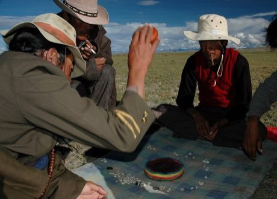

Two to four players throw two dice and race nine coins each around a ring of 64 shells, with captures, blocking and exact-count finishes.
Heritage note
Part of the living heritage of China. Some forms of this practice carry deep meaning for the communities who keep it; here we describe the play and the craft only, with respect for its roots.
Origins
Usually placed in the era of River Valleys and First Cities (about 3000 to 1000 BCE), although its exact origins are uncertain, within the cultural world of China.
Sources
Related entries

Liubo
China · Board and table games
E-sugoroku
Japan · Board and table games
Generala
Argentina +2 · Board and table games
Game of the Goose
Italy +2 · Board and table games
Sáhkku
Worldwide · Board and table gamesParxís
Andorra · Board and table games